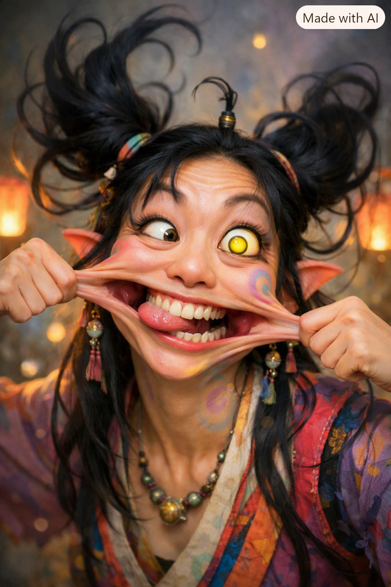

Party fun
Face painting should feel magical — and that’s exactly what I bring to every event. Whether it’s a birthday party, school celebration, fair, or family gathering, I create colourful, joyful designs that make kids light up and adults smile.
Where imagination comes to life.
From shimmering unicorns to bold superhero masks, Vicko creates face‑painting magic that kids remember long after the party ends. Trusted by parents and loved by little faces across Rolleston, Lincoln, and West Melton — book the artist who turns every event into pure joy.

Hi, I’m Vicko — your local face painter bringing colour, sparkle, and big smiles to Rolleston, Lincoln, and West Melton. I care deeply about creating a fun, calm, confidence‑boosting experience for every child, with designs that make them feel amazing.
I make face painting feel easy, joyful, and memorable. Every design is chosen to match your party theme, keep the line moving smoothly, and make each child feel special. I truly love working with children — their laughter, curiosity, and excitement fill my heart. Seeing their faces light up when they look in the mirror is the best part of what I do.
With patience, kindness, and a smile, I help create moments that families remember long after the paint is washed away.

Whether it’s a backyard birthday, school fair or family event, I deliver bright, friendly face painting with the energy and care every party deserves.
Face painting should feel magical — and that’s exactly what I bring to every event. Whether it’s a birthday party, school celebration, fair, or family gathering, I create colourful, joyful designs that make kids light up and adults smile.
Your child’s comfort comes first. I use only high-quality, hypoallergenic paints that are gentle on sensitive skin and wash off easily with warm water. Every product is carefully chosen to be safe, soft, and kid-approved.
I’m proud to serve families and community events across Rolleston, West Melton, Lincoln, and the surrounding areas. Whether it’s a small backyard birthday or a busy school fair, I bring the same care, creativity, and friendly energy to every event.
2 hours of face painting fun with lots of bright designs for party guests.
Great for school fetes, markets, and charity events with fast, colourful painting.
Short and sweet face painting sessions for small gatherings, classrooms, or playdates.
Real face painting from recent parties and events, ready to inspire your next celebration.
Trusted by parents and loved by party guests.
"Vicko made our party so much fun! Every child wanted a second design. The colours were amazing."
— Emma, Rolleston"Professional, friendly and quick. The face paint stayed bright and came off easily after the event."
— James, West MeltonCall or email Vicko to chat about your party, date, and design ideas. Every event is different, so it’s easiest to talk it through directly.